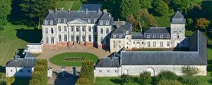
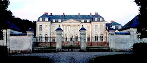
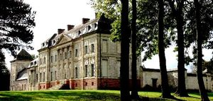
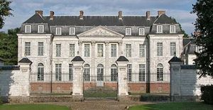

Recensement Jean-Claude Truffet
| Département | 62 — Pas-de-Calais |
| Canton | Avesnes-le-Comte |
| Commune | Barly |
| Type d'édifice | château |
| Période d'origine | XVIII |
| Coordonnées GPS | 50° 14' 59' Nord, 2° 33' 3" Est |




BARLY, débutée vers 1780 à l'initiative de Vindicien Antoine Blin et de son épouse, Marie Pétronille de Beauvoir de Séricourt. Les Blin, également appelés Blin de Barly, sont une famille de fermiers et laboureurs aisés, qui n'ont jamais été anoblis. La seigneurie de Barly fut vendue, en 1698, par Claude de Richardot, Prince de Steenhuyse, à Marguerite Le Maistre, veuve d'Antoine Blin, bourgeois d'Arras, seigneur de Wanquetin. Les 3 fils du couple, Jean-Marie Blin, capitaine d'infanterie, hérita de Barly. Il décéda en 1775 dans sa "maison seigneuriale" à Barly. Son fils Vindicien Antoine Blin de Barly, capitaine au régiment de Rohan, épousa Barbe Louise Hulot en 1739. Veuf, il se remaria avec Marie Pétronille de Beauvoir de Séricourt, avec laquelle il entama la construction du château de Barly actuel. Le couple décéda, en 1786, avant l'achèvement des travaux. Jean Vindicien Blin de Varlemont de Barly, fils de Vindicien Antoine et de Barbe Louise Hulot lui succède alors. Capitaine au régiment des dragons de la Reine, Jean Vindicien épouse en 1782 Catherine Dagon de la Conterie. Élu premier maire du village en 1790, il n'est inquiété au cours de la Révolution que pendant la Terreur. Il se trouva assigné à résidence au château. Ayant divorcé, en 1794, il loua le château de Barly lors des étés de 1812 à 1818, à l'Evêque d'Arras. Après la mort de Jean Vindicien en 1832, son fils et unique héritier, Achille Pierre Blin de Varlemont, revendit le château de Barly, en 1837, à Blanche des Escotais, Veuve du Comte Adrien Eugène Léonard de Tramecourt. La Comtesse de Tramecourt décéda, en 1879 : Barly fut légué à son neveu le Marquis du Luart. Inoccupé, le château de Barly est parfois loué durant l'été. Arthur Duhem, vice-président de la chambre de commerce de Lille, racheta Barly, le 8/07/1914.
BARLY; Après la guerre, la famille Duhem reprend possession des lieux, et Arthur Duhem décéda, à Barly, en 1930. En 1937, ses enfants vendirent le château à Robert Bouttemy, agriculteur du village. Pendant la seconde guerre mondiale, Barly est occupé par des unités allemandes. A la fin 1960, monseigneur Jean Lestocquoy, président de la commission départementale des M.H. du Pas-de-Calais, attire l'attention publique, sur les menaces qui pèsent sur le château de Barly, alors en bien mauvais état. Suite de cette mobilisation, le Colonel Jacques d'Antin de Vaillac l'acheta, en 1970. Le 2/03/1971, la totalité des bâtiments et des décors intérieurs de Barly ont été classés. Les travaux de restauration débutèrent. Bernard Dragesco et Didier Cramoisan rachetèrent le château de Barly, en Juin 2001. La construction du corps principal devait être terminée en 1784, quand commencèrent les aménagements intérieurs. Ceux-ci furent achevés autour de 1794. Fruit du goût et de la volonté de la famille Blin de Barly, cet ensemble de pur style Louis XVI est de très grande qualité architecturale et a survécu dans un état dauthenticité absolument exceptionnel, si rare en France, fruit du goût et de la volonté de la famille Blin de Barly, mérite dêtre souligné.
Éléments protégés MH : le château et ses dépendances (la chapelle, les communs et le portail d'entrée) : classement par arrêté du 2 mars 1971.
Famille de Vindicien Antoine Blin"
Château de Varlimont à Barly GPS : 50° 14' 59' Nord, 2° 33' 3" Est